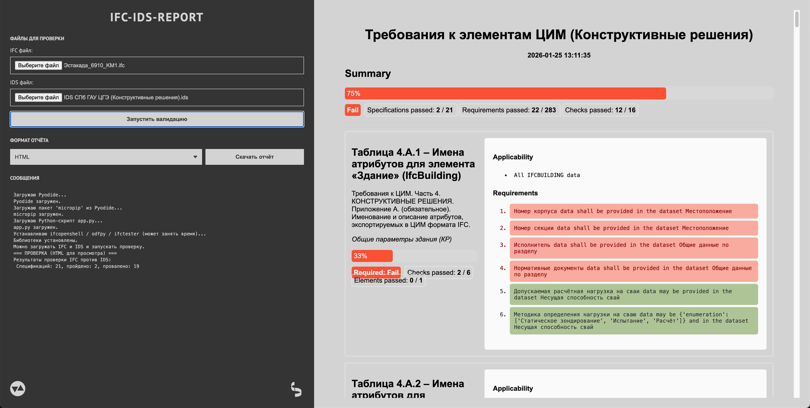

IFC-IDS-REPORT
https://vdobranov.github.io/IFC-IDS-REPORT/
Статическое одностраничное веб-приложение для проверки файлов IFC на соответствие спецификациям IDS.
Подгружаешь свой IFC для проверки, подгружаешь IDS, в котором требования для проверки, запускаешь валидацию, смотришь отчёт справа, скачиваешь отчёт слева в любом доступном формате (HTML, JSON, BCF, ODS).

По сути, приложение — оболочка над модулем IfcTester в библиотеке ifcopenshell. Альтернативно тем же функционалом можно воспользоваться и через командную строку, и в BonsaiBIM, и в ifctester.org.